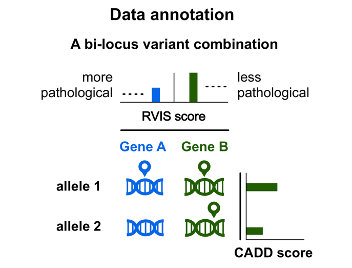

Data filtering and annotation#
Data filtering#
When passing no extra arguments to the oligopipe CLI, it will run with the default filtering procedure.
There are two types of filtering offered by oligopipe: a variant filtering and a gene filtering procedure.
1. Variant filtering#
As command-line arguments:
Filtering options:
-m MAX_MAF, --max-maf MAX_MAF
The MAF to filter variants (default: 0.035).
--keep-intron-syn Don't remove intronic and synonymous variants (not recommended).
--keep-intergenic Don't remove intergenic variants (not recommended).
In the config YAML:
variant_filters:
max_maf: 0.035
remove_intronic_synonymous: True
remove_intergenic: True
The variant filtering procedure ensures that your analysis will contain variants in accordance with the variant types used to train VarCoPP: exonic and splicing variants of MAF lower or equal than 3.5% in protein-coding genes.
MAF#
Allows to change the minimum threshold of MAF for the variants. A MAF of ≤ 0.035 was used to train VarCoPP and is the recommended/default threshold.
Keep Intergenic#
Add this flag if you want to disable the default setting of removing variants that are not inside the defined gene coordinates, based on the selected assembly (GRCh37/hg19 or GRCh38/hg38).
Keep intronic and synonymous#
Add this flag if you want to disable the following defaults:
-
removing all intronic variants that have a distance bigger than 13 nucleotides from each exon edge, based on the exon coordinates of the canonical transcript of the gene.
-
removing all synonymous variants that have a distance bigger than 195 nucleotides from each exon edge, based on the exon coordinates of the canonical transcript of the gene.
NOTE: apart from the requested filtering steps,
oligopipemay also exclude some extra variants during the data annotation process. You can consult the complete list of variant exclusion cases during that process here.
2. Gene filtering#
For the
predictoption only. For theprioritize, all genes in the exome are considered.
As command-line argument:
Filtering options:
-gp gene_panel, --panel gene_panel
Gene panel file, containing a list of gene names or ENSGs to restrict the analysis.
In the config YAML:
gene_panel_file:
The gene filtering option restricts the analysis to a specified list of relevant genes that can be present in your data. This procedure is highly recommended in case your VCF contains the complete exome of an individual, as it can dramatically limit the amount of False Positives that can be obtained.
To run your analysis only with a subset of genes, you can simply upload a .txt file with the gene names / ENSGs you are
interested to include, each gene being in a different line.
oligopipe will use this list to filter the genes that will be used in the analysis.
Data annotation#
After you launch oligopipe, the program will:
- automatically annotate your data with the biological information needed for the integrated methods, for which it needs to connect to an annotation database;
- create all possible variant combinations between any pair of genes present in your variant input;
- order the variants and genes inside each combination.
Below, you can find some important parameters for each process.
1. Gene annotation#
To map variants in genes, oligopipe uses at first the gene information that is present in the CADD annotation file for that variant and uses only the canonical transcripts of those genes, according to the Ensembl GRCh37/hg19 or GRCh38/hg38 genome version.
In cases where a variant can be mapped to multiple genes, oligopipe maps that variant to only one gene based on a set of priority rules that include (starting from higher to lower priority): valid gene IDs and canonical transcript, prioritisation of genes based on their biotype and the functional consequence of the variant, prioritisation of genes where the variant falls inside the gene and canonical transcript coordinates, presence of a CCDS, prioritisation of gene with the longest canonical transcript, etc.
oligopipe then annotates the genes with:
- the required gene features for VarCoPP (detailed description of the features and their sources in the link)
- the Residual Variation Intolerance Score (RVIS), a metric that show the susceptibility of a gene to disease. Lower values of RVIS indicate greater susceptibility of a gene to candidate disease-causing mutations.
2. Gene pair annotation#
oligopipe annotates a gene pair with the gene pair features required by VarCoPP.
oligopipe uses the Residual Variation Intolerance Score (RVIS)
metric to order the appearance of genes inside each digenic variant combination, with gene A being always the gene with the lower RVIS value,
and thus more probable to be have a disturbed function due to the presence of a variant.
You can find more details about how oligopipe creates digenic variant combinations and orders variants and
genes in the Creating digenic variant combinations section.
3. Variant annotation#
oligopipe first maps a variant in a gene based on the Gene annotation process described above.
It then annotates each variant with the required variant features for VarCoPP, the most important being the CADD score.
When oligopipe creates digenic variant combinations, it uses the CADD score
to order the appearance of variants that are present inside the same gene (i.e. in cases of heterozygous compound variants).
You can find more details about how oligopipe creates digenic variant combinations and orders variants and genes
in the Creating digenic variant combinations section.
Variant exclusion#
In some situations during the data annotation process oligopipe excludes variants from the analysis and you will not find them in the results:
- Variant not exonic in canonical transcript
We use only the canonical Ensembl transcript identifiers to annotate our variants. If you have selected to exclude intronic variants from your analysis, if the variant is not exonic in the canonical transcript of the gene, even if it may be exonic in an alternative transcript, it will be excluded. - Variant with invalid zygosity
Variants with GT: 0/0, 0|0, ./. or . in a VCF file are considered invalid and are excluded from the analysis. - CADD score not available
oligopipeannotates variants with a CADD score, which is a feature required for the pathogenicity predictions. As this feature is important for the predictions, if a CADD score is not available for a variant, that variant is excluded for the analysis, as a missing value may severely alter the results. - Variants only in one gene
Asoligopipecreates combinations between gene pairs, if your input data includes variants from one gene only, you will not get any results. - The variant is a CNV or medium/long-sized InDel
oligopipeanalyses only SNVs and small insertions and deletions (up to 100 bp currently). Any other variant type in your data is automatically excluded from the analysis.
Creating digenic variant combinations#
After annotation, VarCoPP creates all possible variant combinations between any gene pair present in your input, taking into consideration any filtering options you have included.
You can find below a list of details and constraints that take place during this procedure.
1. Number of variants per combination#
oligopipe creates for any gene pair variant combinations that can be:
-
bi-allelic (i.e. one mutated allele at each gene)
e.g.: one heterozygous variant per gene -
tri-allelic (i.e. three mutated alleles in total)
e.g.: an homozygous variant at gene A and an heterozygous variant in gene B -
tetra-allelic (i.e. four mutated alleles in total)
e.g.: one homozygous variant per gene
In the tri-allelic and tetra-allelic cases, a digenic combination can also include heterozygous compound variants (i.e. two different mutated alleles in the same gene), along with the presence of variant(s) in another gene.
NOTE: Tetra-allelic variant combinations with heterozygous compound variants in BOTH genes are not created.
NOTE: In case where multiple heterozygous variants are present in a single gene, these are used together as heterozygous compound variants in a combination with another gene and not individually anymore. This is to solve the problem of certain genes being over-represented in the results just because they contain heterozygous compound variants.
If a single gene contains more than two heterozygous variants, these are used in pairs of two as we always use two mutated alleles per gene.
2. Order of genes#
For each digenic variant combination, gene A is always the gene with the lowest Residual Variation Intolerance Score (RVIS) (see also the Gene Annotation section) and, thus, the one with a higher probability to be associated with a disease.
3. Order of variant alleles inside the gene#
In case of two different mutated alleles in the same gene (heterozygous compound cases), the variant allele 1 is always the variant allele with the highest CADD score.
A graphical representation of a digenic combination: 